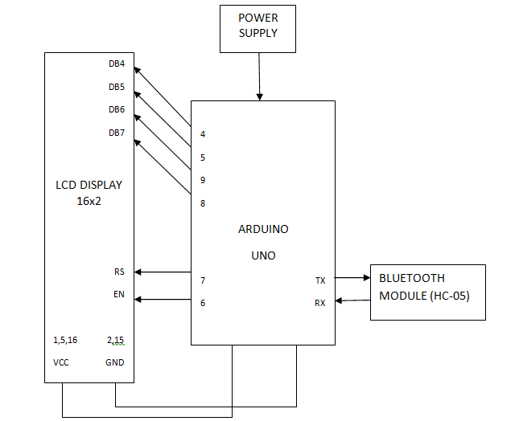
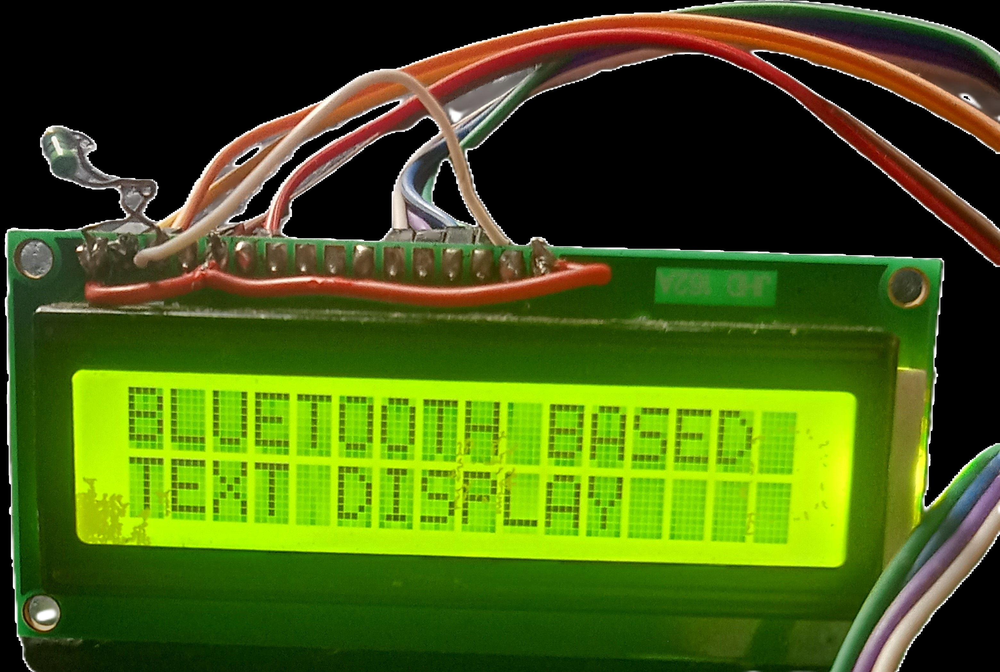
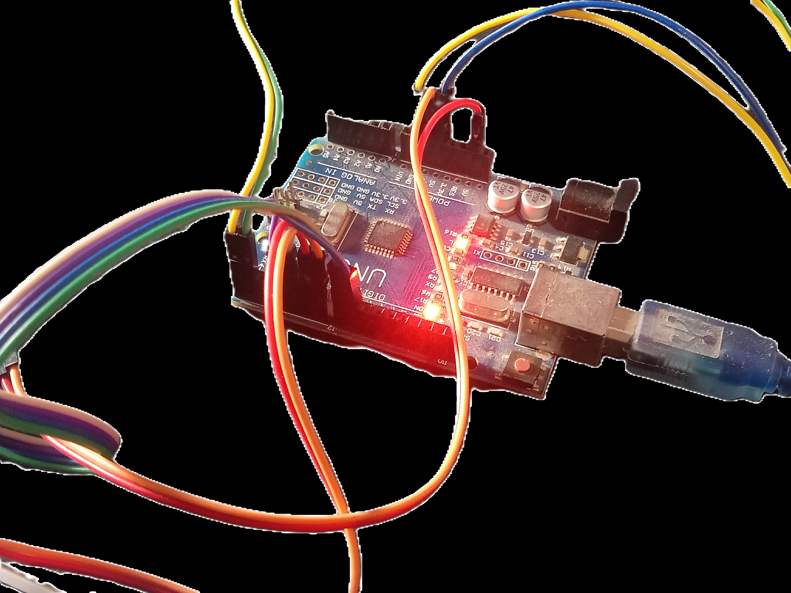

Introduction
Welcome to the project website. This project is about, building an Arduino and bluetooth based text display. Here you can print text of any length on 16x2 LCD Display, by just sending the text via Bluetooth. This project can be used as a simple Notice Board at homes, offices and public places. You just need the following things to make this project. So, Lets get started.
Components Needed
- Arduino UNO
- 16x2 LCD Display
- HC-05 Bluetooth Module
- Connecting Wires
- USB Cable
- A Mobile phone or PC
- You need the Arduino Droid App if you have Mobile phone.
- If you have a PC, you need Arduino IDE to upload the code.
- Also, you have to install a Bluetooh Control App to connect and send text to Arduino via Bluetooth.
Circuit or Block Diagram
Some Pictures
 Tutorial Video
Code
#include < LiquidCrystal.h >
// LCD pins
#define LCD_RS 7
#define LCD_EN 6
#define LCD_D4 5
#define LCD_D5 4
#define LCD_D6 9
#define LCD_D7 8
LiquidCrystal lcd(LCD_RS, LCD_EN, LCD_D4, LCD_D5, LCD_D6, LCD_D7);
void setup() {
// Set up LCD
lcd.begin(16, 2);
// Set up serial communication (Bluetooth HC-05 is connected to default serial pins)
Serial.begin(9600);
}
void loop() {
if (Serial.available()) {
// Read input from serial (Bluetooth)
String input = Serial.readStringUntil('
');
// Display the input message on the LCD
displayMessage(input);
}
}
void displayMessage(String message) {
lcd.clear();
// Check if the message length exceeds the display width
if (message.length() <= 16) {
// Message fits on one line
lcd.setCursor(0, 0);
lcd.print(message);
} else {
// Message is longer than one line
String firstLine = message.substring(0, 16);
String secondLine = message.substring(16);
lcd.setCursor(0, 0);
lcd.print(firstLine);
// If second line is longer than the LCD width, scroll it
if (secondLine.length() > 16) {
for (int i = 0; i <= secondLine.length() - 16; i++) {
lcd.setCursor(0, 1);
lcd.print(secondLine.substring(i, i + 16));
delay(500); // Adjust scroll speed as needed
lcd.clear(); // Clear screen before the next scroll
lcd.setCursor(0, 0);
lcd.print(firstLine); // Ensure the first line remains static
}
lcd.setCursor(0, 1);
lcd.print(secondLine.substring(secondLine.length() - 16)); // Print the last part of the second line
} else {
lcd.setCursor(0, 1);
lcd.print(secondLine);
}
}
}